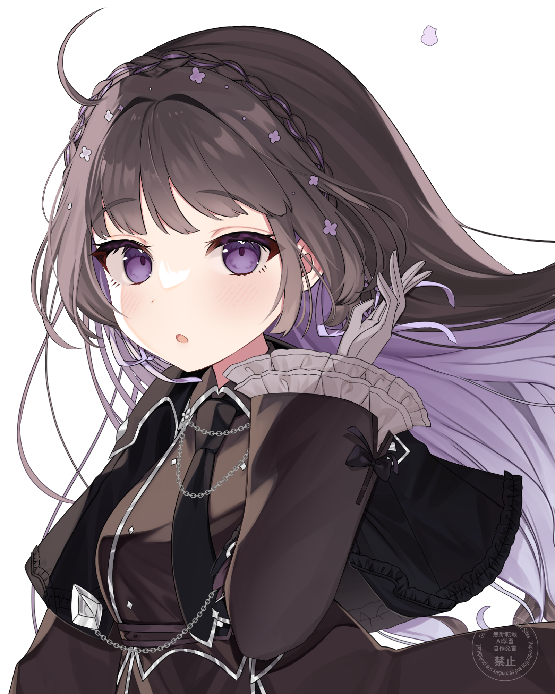

MENU
HOME
NOTES
PROFILE
COSTUME
MUSIC
SONG LIST
LINKS
Profile

ACTIVITY
NAME
七藤ちはね
BIRTHDAY
07.24
DEBUT
2021.10.09
LIKE
音楽 / ゲーム
COMMUNITY
FAN MARK
💜🥀
MASCOT
ウィス(犬)・タリア(猫)
GENERAL TAG
#七藤ちはね
FAN ART TAG
#藤色美術展
モデル制作
入鹿ぱる様 ↗
ロゴ制作
加瀬様 ↗
COSTUME
衣装・三面図・全身イラストはこちら
↗